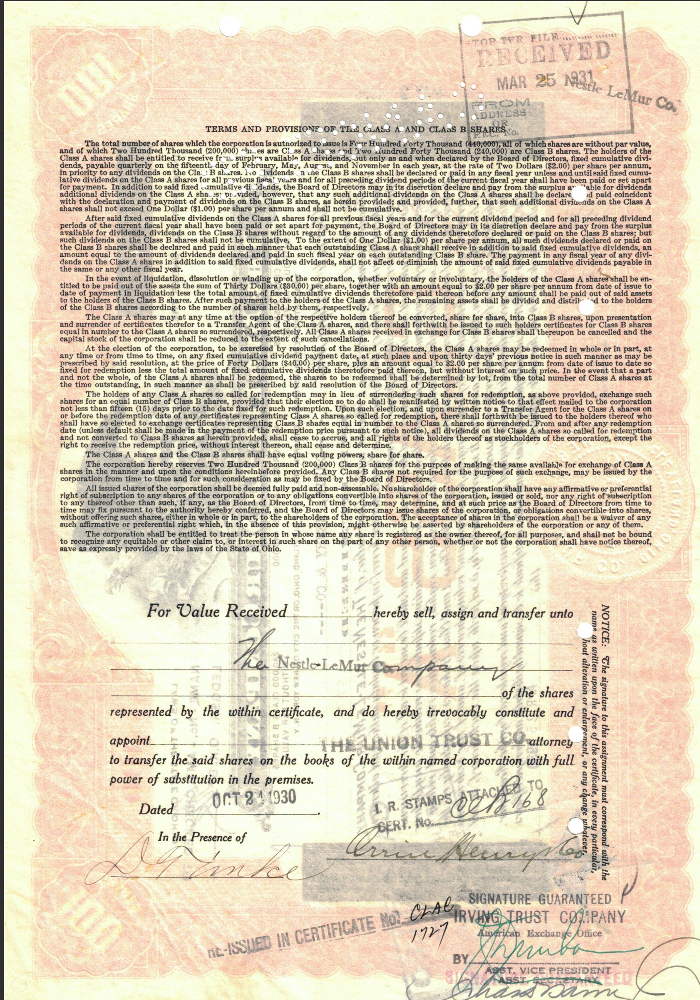
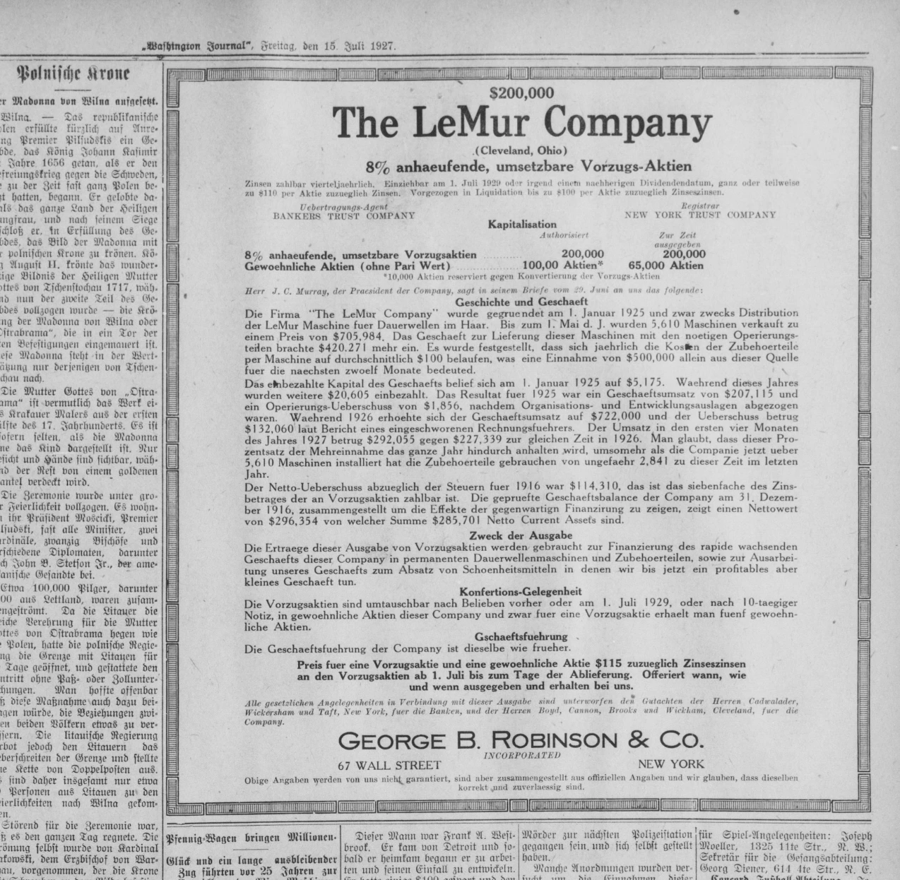

These records document the companies behind the permanent wave through share certificates, business correspondence and a contemporary share offering.
Share certificate



Business correspondence


See the source analysis of the Guayama envelope.
The LeMur Company share offering

Read more about the company’s origins and development.